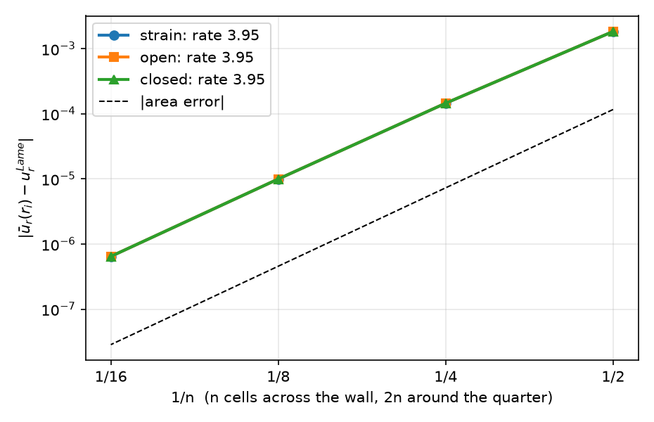
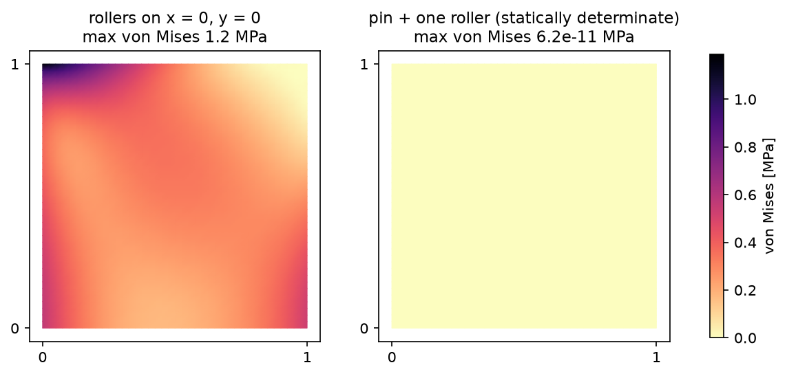
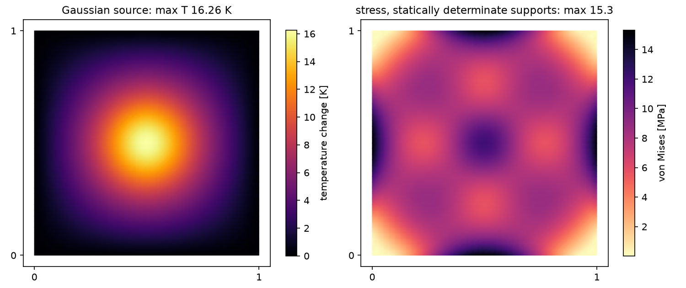
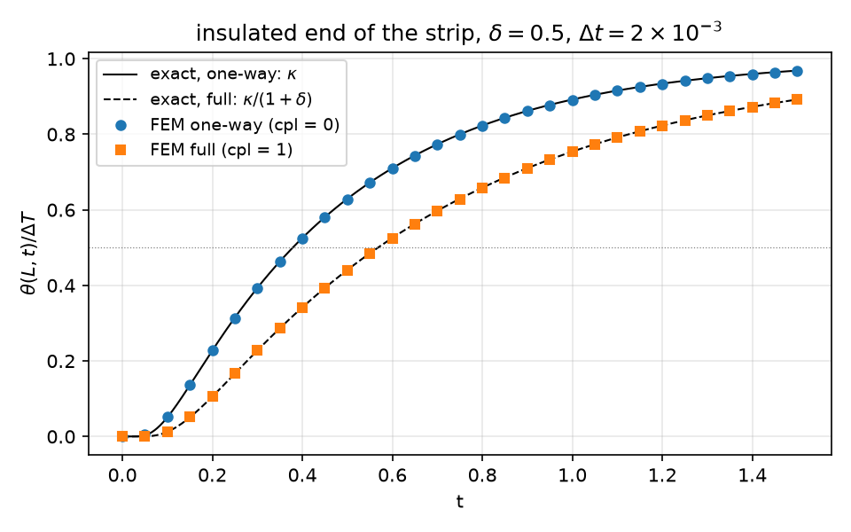

AI-based Materials and Process Simulation II
Week 03 — Generalized Plane Strain · Thermoelasticity (One-Way and Fully Coupled) · Static Condensation
Process Systems Laboratory
Department of Chemical and Biomolecular Engineering, SeoulTech
Today
| Part | Topic | Time |
|---|---|---|
| Quiz on Week 2 (closed-AI) | 10 min | |
| A | Theory — one 3D law and three 2D reductions, generalized plane strain, thermal stress, coupled thermoelasticity | 55 min |
| B | Generalized plane strain in code — the extra unknown e_0, static condensation, the thick tube | 40 min |
| C | Thermoelasticity in code — one-way coupling, supports, a mixed (\theta,\mathbf u) space, time stepping | 45 min |
| D | LLM pitfalls · assignment | 20 min |
Lab notebook: W03_lab.ipynb · Assignment: W03_HW3.ipynb (due before Week 4)
Week 2 in one slide
- Plane stress = plane-strain law with \lambda\to\lambda^*=2\lambda\mu/(\lambda+2\mu); orthotropy \mathbf C=\mathbf S^{-1}, rotate \boldsymbol\varepsilon in and \boldsymbol\sigma out.
- Gmsh: build on rank 0, physical groups → tags, check the area. Mesh study and size study.
- Axisymmetry: 3\times3 strain with u_r/r, r-weighted form; Lamé for three end conditions (1.9667 / 1.8667 / 1.9067).
Today: the long prism whose ends are free (or capped) — one extra number e_0 in the unknowns; then temperature: as a load (one-way) and as an unknown (fully coupled).
Part A · One law, three reductions, temperature
A 2D reduction is a choice of \varepsilon_{zz}
Long prism along z, cross-section \Omega in (x,y), loads independent of z. Keep the 3D law \boldsymbol\sigma=2\mu\boldsymbol\varepsilon+\lambda(\operatorname{tr}\boldsymbol\varepsilon)\mathbf I_3 with \boldsymbol\varepsilon built from u_x(x,y),u_y(x,y) and one more entry:
| Reduction | \varepsilon_{zz} | \sigma_{zz} | when |
|---|---|---|---|
| plane strain | 0 | \lambda\operatorname{tr}\boldsymbol\varepsilon (free) | ends held fixed |
| plane stress | -\dfrac{\lambda}{\lambda+2\mu}(\varepsilon_{xx}+\varepsilon_{yy}) | 0 | thin plate |
| generalized plane strain (GPS) | e_0 — one unknown number | free, but \displaystyle\int_\Omega\sigma_{zz}\,dA=N | long prism, ends free or capped |
- GPS: every cross-section stretches by the same amount; the extra equation is the axial force balance at the ends.
- In code all three are one function that returns \varepsilon_{zz}; the rest of the model is shared.
Generalized plane strain: the weak form
Unknowns (\mathbf u,e_0)\in V\times\mathbb R. Test functions (\mathbf v,\hat e). Virtual work of the 3D stress on the 3D strain: \int_\Omega\boldsymbol\sigma(\mathbf u,e_0):\boldsymbol\varepsilon(\mathbf v,\hat e)\,dA=\int_{\Gamma_N}\mathbf t\cdot\mathbf v\,ds+N\,\hat e\qquad\forall(\mathbf v,\hat e)
Split by the test functions:
- \hat e=0: the 2D problem, with e_0 entering through \lambda e_0 in \sigma_{xx},\sigma_{yy};
- \mathbf v=0: \displaystyle\int_\Omega\sigma_{zz}\,dA=N — one scalar equation.
Discretised, a bordered matrix: \begin{pmatrix}K&\mathbf g\\\mathbf g^\top&c\end{pmatrix}\begin{pmatrix}\mathbf u\\e_0\end{pmatrix}=\begin{pmatrix}\mathbf f\\N\end{pmatrix} g_i=\int\lambda\,\nabla\!\cdot\boldsymbol\phi_i, \;c=\int(\lambda+2\mu)\,dA.
e_0 is a “Real” degree of freedom: one value for the whole domain, coupled to every row through \mathbf g (a dense row and column).
Static condensation
Eliminate the single unknown e_0 (block Gauss elimination): \underbrace{(c-\mathbf g^\top K^{-1}\mathbf g)}_{N_1}\,e_0=N-\underbrace{\mathbf g^\top K^{-1}\mathbf f}_{N_0},\qquad \mathbf u=\underbrace{K^{-1}\mathbf f}_{\mathbf u_0}-e_0\,\underbrace{K^{-1}\mathbf g}_{-\mathbf u_1}
Two solves with one matrix
Case 1: loads on, e_0=0 → \mathbf u_0, axial force N_0. Case 2: loads off, e_0=1 → \mathbf u_1, axial force N_1. Then N_0+e_0N_1=N and \mathbf u=\mathbf u_0+e_0\mathbf u_1 — exact for a linear problem, one LU factorisation.
- N_1 is the Schur complement: the axial stiffness of the section once the in-plane response has been solved for. Case 2 is not “nothing happens”: e_0=1 loads the section through \lambda e_0.
- The same idea at element level condenses interior (bubble) DOFs before assembly; here it condenses one global DOF.
The thick tube in GPS
Lamé with \sigma_{zz},\varepsilon_{zz} constant (Week 2). In the cross-section: \varepsilon_{zz}=e_0=\big(\sigma_{zz}-\nu(\sigma_{rr}+\sigma_{\theta\theta})\big)/E, with \sigma_{rr}+\sigma_{\theta\theta}=2A:
| End condition | N | e_0 (r_i=1,r_o=2,p=1,E=1,\nu=0.3) | u_r(r_i) |
|---|---|---|---|
| plane strain | (reaction) | 0 | 1.906667 |
| open ends | 0 | -2\nu A/E=-0.2 | 1.966667 |
| closed ends | p\pi r_i^2 | (1-2\nu)A/E=0.13333 | 1.866667 |
The same three numbers as the axisymmetric model of Week 2, now from a 2D cross-section with one extra unknown — an independent check of both.
Thermal strain
Temperature change \Delta T=T-T_0 from the stress-free reference T_0; isotropic expansion \alpha\,\Delta T\,\mathbf I: \boldsymbol\sigma=\mathbb C:(\boldsymbol\varepsilon-\alpha\,\Delta T\,\mathbf I)=2\mu\boldsymbol\varepsilon+\lambda(\operatorname{tr}\boldsymbol\varepsilon)\mathbf I-\beta\,\Delta T\,\mathbf I,\qquad \beta=(3\lambda+2\mu)\alpha=\frac{E\alpha}{1-2\nu}
| Reduction | in-plane law | \sigma_{zz} |
|---|---|---|
| plane strain / GPS | 2\mu\boldsymbol\varepsilon+\lambda(\operatorname{tr}\boldsymbol\varepsilon+\varepsilon_{zz})\mathbf I_2-\beta\Delta T\,\mathbf I_2 | \lambda\operatorname{tr}\boldsymbol\varepsilon+(\lambda+2\mu)\varepsilon_{zz}-\beta\Delta T |
| plane stress | 2\mu\boldsymbol\varepsilon+\lambda^*(\operatorname{tr}\boldsymbol\varepsilon)\mathbf I_2-\dfrac{E\alpha}{1-\nu}\Delta T\,\mathbf I_2 | 0 |
With the “choice of \varepsilon_{zz}” code, each row comes out of the same 3D law — nothing to re-derive per case (HW3 Q1 asks for the derivation once).
Which temperature fields cause stress?
\Delta T is only a load if the thermal strain \alpha\Delta T\,\mathbf I is not compatible (not the symmetric gradient of some displacement) or if the supports prevent it.
Stress-free temperature fields
- 3D, free body: \Delta T linear in x,y,z → no stress.
- Plane stress, free simply connected plate: \Delta T harmonic (\nabla^2\Delta T=0, e.g. steady conduction without a source) → no in-plane stress.
- Plane strain: the in-plane stress vanishes for harmonic \Delta T too, but \sigma_{zz}=-E\alpha\Delta T remains (the ends are held).
“Free” means: the supports remove the rigid motions and nothing more (statically determinate). Part C measures what extra supports do.
Temperature as an unknown: full coupling
The energy balance contains the rate of the elastic volume change. Linearised about T_0, with \theta=T-T_0: \rho c\,\dot\theta+T_0\,\beta\,\operatorname{tr}\dot{\boldsymbol\varepsilon}-\nabla\!\cdot(k\nabla\theta)=Q,\qquad \nabla\!\cdot\boldsymbol\sigma(\mathbf u,\theta)+\mathbf f=\mathbf 0
- One-way (weak) coupling: drop T_0\beta\operatorname{tr}\dot{\boldsymbol\varepsilon} → solve \theta first, then \mathbf u with \theta as a load.
- Full coupling: the expansion of the solid consumes heat (and compression releases it) → \theta and \mathbf u in one system.
- At steady state \dot{\boldsymbol\varepsilon}=0: both models give the same answer. The coupling only acts during a transient.
How strong is the coupling?
Coupling number
\displaystyle\delta=\frac{T_0\,\beta^2}{\rho c\,(\lambda+2\mu)} — the heat taken by the elastic expansion relative to the heat stored, in uniaxial strain.
1D strip in uniaxial strain, \sigma_{xx}=0 (free end): \varepsilon_{xx}=\beta\theta/(\lambda+2\mu), so the heat equation becomes \rho c\,(1+\delta)\,\dot\theta=k\,\theta''\qquad\Rightarrow\qquad \text{diffusivity } \frac{\kappa}{1+\delta},\ \ \kappa=\frac{k}{\rho c}
| Material (T_0=293 K) | \delta | one-way model: time scale off by |
|---|---|---|
| steel (E 210 GPa, \alpha 1.2\times10^{-5}) | 0.0114 | 1.1 % |
| aluminium (E 70 GPa, \alpha 2.3\times10^{-5}) | 0.0261 | 2.6 % |
Small for metals — but it is a model error you can measure, not a belief. Part C uses \delta=0.5 (“what if”) to make it visible.
Part B · Generalized plane strain in code
Math → code (gps.py)
| Mathematics | DOLFINx 0.11 |
|---|---|
| \boldsymbol\varepsilon (3\times3) with \varepsilon_{zz} | ufl.as_matrix([[u[0].dx(0), g, 0], [g, u[1].dx(1), 0], [0, 0, ezz]]) |
| \boldsymbol\sigma=2\mu\boldsymbol\varepsilon+\lambda\operatorname{tr}\boldsymbol\varepsilon\,\mathbf I-\beta\Delta T\,\mathbf I | 2*mu*e + lmbda*ufl.tr(e)*ufl.Identity(3) - beta*dT*ufl.Identity(3) |
| \varepsilon_{zz}: 0 / e_0 / from \sigma_{zz}=0 | ezz_of(m, mode, u, dT, e0) |
| in-plane virtual work | ufl.inner(S2(sigma3(...)), ufl.sym(ufl.grad(v)))*dx with S2 = the 2\times2 block |
| e_0 of a solve | e0c = fem.Constant(msh, 0.0); set e0c.value before assembling \mathbf b |
| N=\int\sigma_{zz}\,dA | fem.assemble_scalar(fem.form(sigma3(...)[2, 2]*dx)) + allreduce |
Material data can be numbers or DG0 functions (Material.regions), so the same code runs layered sections.
One factorisation, two right-hand sides
A = assemble_matrix(a, bcs=bcs); A.assemble()
ksp = PETSc.KSP().create(comm); ksp.setOperators(A); ksp.setType("preonly")
ksp.getPC().setType("lu"); ksp.getPC().setFactorSolverType("mumps") # factorised at the first solve
def solve(lf_, e0_): # load factor, e0
lf.value, e0c.value = lf_, e0_
b = assemble_vector(L); apply_lifting(b, [a], [bcs])
b.ghostUpdate(addv=PETSc.InsertMode.ADD, mode=PETSc.ScatterMode.REVERSE); set_bc(b, bcs)
w = fem.Function(V); ksp.solve(b, w.x.petsc_vec); w.x.scatter_forward(); return w
u0, u1 = solve(1.0, 0.0), solve(0.0, 1.0) # same KSP: the LU factors are reused
e0 = (N - Nz(u0, 0.0, 1.0)) / Nz(u1, 1.0, 0.0)
uh.x.array[:] = u0.x.array + e0 * u1.x.arrayLinearProblem would assemble and factorise again for each case; for one extra unknown that doubles the cost, for many (Week 9: periodic cells) it matters.
A curved mesh without Gmsh
Week 2: the same Gmsh script gave 2968 cells on macOS and 3004 on Colab. For exact reproducibility, map a structured grid:
R, TH = np.meshgrid(np.linspace(ri, ro, 2*nr + 1), np.linspace(0, np.pi/2, 2*nt + 1), indexing="ij")
x = np.c_[(R*np.cos(TH)).ravel(), (R*np.sin(TH)).ravel()] # 6-node triangles: vertices + edge midpoints
cells = [... [v0, v1, v2, mid(v1,v2), mid(v0,v2), mid(v0,v1)] ...] # basix order of the P2 triangle
msh = mesh.create_mesh(comm, cells, ufl.Mesh(basix.ufl.element("Lagrange", "triangle", 2, shape=(2,))), x)- Curved (isoparametric) cells: area error -1.2\times10^{-4},-7.3\times10^{-6},-4.6\times10^{-7},-2.9\times10^{-8} — rate 4.
- Rank 0 passes the arrays, the others pass empty ones;
create_meshdistributes.
Tube: three end conditions, one code

n=16: u_r(r_i) = 1.9066660 / 1.9666660 / 1.8666660 and e_0 = 0 / −0.2000000 / 0.1333333. The three error curves lie on top of each other: e_0\,\mathbf u_1 is a uniform contraction that P2 represents exactly — the error is that of the plane-strain part.
The bordered system, assembled
The same tube, n=4, serial: put K, \mathbf g=-\mathbf b_1 and c=(\lambda+2\mu)|\Omega_h| into one dense 307\times307 matrix and solve.
| Check | Value |
|---|---|
| \max\lvert M-M^\top\rvert | 8.9\times10^{-16} |
| e_0 bordered − condensed | 2.8\times10^{-16} |
| \max\lvert\mathbf u_{\rm bordered}-\mathbf u_{\rm condensed}\rvert | 8.0\times10^{-14} |
| c | 3.1718 |
| N_1=c-\mathbf g^\top K^{-1}\mathbf g | 2.3561872 =E\,|\Omega_h| |
The Schur complement turns (\lambda+2\mu) — the stiffness with the section held laterally — into E: the section contracts freely in its plane.
Part C · Thermoelasticity in code
One-way coupling
- The temperature
Function(P1) enters the P2 mechanical form directly; UFL evaluates it at the quadrature points. - \Delta T only appears on the right-hand side: \displaystyle\int\beta\,\Delta T\,\nabla\!\cdot\mathbf v (in plane stress with E\alpha/(1-\nu)).
- Supports:
points=[(marker, comp)]fixes single vertices — a pin and a roller remove the three rigid motions of a plane body and nothing more.
The heated plate: what the supports do

[0,1]^2, T=x (harmonic), plane stress, E=210 GPa, \alpha=10^{-5}. Rollers on x=0 and y=0: \max u_x=5.7164\times10^{-6} m, stress 1.19 MPa. Pin + roller: \max u_x=5.0000\times10^{-6}=\alpha/2, stress 6\times10^{-11}, \lVert\mathbf u_h-\mathbf u_{\rm free}\rVert=1.5\times10^{-17} with \mathbf u_{\rm free}=\alpha\big(\tfrac12(x^2-y^2),\,xy\big).
Reading the plate result
| Supports | reduction | \max u_x [m] | max von Mises [MPa] | \max\lvert\sigma_{zz}\rvert |
|---|---|---|---|---|
| rollers | plane stress | 5.7164\times10^{-6} | 1.19 | 0 |
| pin + roller | plane stress | 5.0000\times10^{-6} | 6\times10^{-11} | 0 |
| pin + roller | plane strain | 6.5000\times10^{-6} | 2.10 | 2.10 =E\alpha\cdot1 |
- The rollers impose u_x=0 on x=0, where the free expansion has u_x=-\alpha y^2/2 (the edge bends) — that is the 14 %, not “the Poisson effect”.
- Plane strain: (1+\nu)\alpha/2=6.5\times10^{-6}, in-plane stress zero, \sigma_{zz}=-E\alpha\Delta T — exactly the Part A statements.
- An exact stress-free solution is the cheapest test of a thermal code: zero to round-off, and P2 reproduces the quadratic \mathbf u_{\rm free} exactly.
A temperature field that does cause stress

Gaussian source Q=1000\,e^{-r^2/(2\cdot0.1^2)}, all walls at \Delta T=0: T_{\max}=16.26 K. Not harmonic → stress even with free supports: 15.3 MPa (pin + roller), 16.4 MPa (rollers). \max\lvert\mathbf u\rvert: 5.01\times10^{-5} / 5.66\times10^{-5} m.
Full coupling: one mixed space
el = basix.ufl.mixed_element([basix.ufl.element("Lagrange", "triangle", 1), # theta
basix.ufl.element("Lagrange", "triangle", 2, shape=(2,))]) # u
W = fem.functionspace(msh, el)
(th, u), (s, v) = ufl.TrialFunctions(W), ufl.TestFunctions(W)
w_n = fem.Function(W); th_n, u_n = ufl.split(w_n) # previous step
a = (rho_c/dt*th*s + c*T0*beta/dt*ufl.tr(eps(u))*s + k*ufl.inner(ufl.grad(th), ufl.grad(s)))*ufl.dx \
+ ufl.inner(sig(u, th), eps(v))*ufl.dx
L = (rho_c/dt*th_n*s + c*T0*beta/dt*ufl.tr(eps(u_n))*s)*ufl.dx # c = 1 full, 0 one-way
bc_T = fem.dirichletbc(fem.Constant(msh, dT), fem.locate_dofs_topological(W.sub(0), 1, left), W.sub(0))
bc_ux = fem.dirichletbc(0.0, fem.locate_dofs_topological(W.sub(1).sub(0), 1, left), W.sub(1).sub(0))- Implicit Euler; the matrix does not change in time → assemble and factorise once, assemble only \mathbf b per step.
- The matrix is not symmetric (\theta in the mechanics, \operatorname{tr}\boldsymbol\varepsilon in the heat equation with different factors): LU, not CG.
- Output from the mixed function through forms:
w_n.sub(0)*ds(1)for the mean \theta on a boundary.
The strip: one-way vs full vs exact

\theta=\Delta T at x=0, insulated end x=L=1; u_x=0 at x=0, u_y=0 on top and bottom (uniaxial strain), x=L free. Exact: a Fourier series with \kappa or \kappa/(1+\delta).
Measuring the coupling
Half-rise time t_{50} of \theta(L,t), \delta=0.5, P1/P2, 64\times2 cells:
| \Delta t | one-way t_{50} | full t_{50} | ratio full/one-way |
|---|---|---|---|
| 4\times10^{-3} | 0.38059 | 0.56997 | 1.49759 |
| 2\times10^{-3} | 0.37967 | 0.56905 | 1.49879 |
| 1\times10^{-3} | 0.37921 | 0.56858 | 1.49939 |
| exact | 0.37875 | 0.56812 | 1+\delta=1.5 |
- Both t_{50} converge at first order in \Delta t (implicit Euler); the ratio error halves too: 2.4, 1.2, 0.6 \times10^{-3}.
- The ratio is the quantity to test: most of the time-step error cancels in it.
Part D · LLM pitfalls · assignment
What goes wrong in GPS and thermal codes
| Pitfall | Measured symptom (this week) |
|---|---|
| The e_0=1 case solved without its load (\mathbf u_1=0) | N_1=(\lambda+2\mu)A instead of EA: e_0=3.543\times10^{-4} instead of 4.769\times10^{-4} (−26 %) |
| “N=0, so e_0=0: GPS reduces to plane strain” | N_0=-0.15 under an in-plane load: e_0=7.1\times10^{-7}\ne0 |
| Quarter model given the end force of the whole section | closed tube: e_0=1.1333 instead of 0.1333, u_r(r_i)=1.5667 instead of 1.8667 |
| Thermal test on a body with redundant supports, difference blamed on “the Poisson effect” | \max u_x 14 % high, 1.19 MPa where the exact answer is 0 |
| Full coupling “verified” by a steady problem | one-way and full both 5.7164\times10^{-6} m — the coupling term is zero at steady state: the test checks nothing |
All five are from an earlier version of these very examples. The fix: an exact solution with a nonzero answer for the thing being tested.
Prompting for a coupled or GPS model
- State the reduction and the end condition: plane strain, plane stress, or GPS with N (and N for the modelled part, if symmetry is used).
- State the supports and say whether they are meant to be statically determinate; give the boundary and initial conditions of every field.
- For a transient, state the time scheme and ask the model to factorise once.
- Ask for the checks with the code: a stress-free temperature field, the Lamé tube in GPS, a 1D transient with an exact series, a ratio that should equal 1+\delta.
- Run the checks before reading the physics.
Assignment HW3 (due before Week 4)
| Q | Topic | Points |
|---|---|---|
| 1 | Thermal stress in the 2D reductions, stress-free temperature fields, the coupled 1D diffusion (theory) | 20 |
| 2 | GPS with bending: \varepsilon_{zz}=e_0+\kappa_xx+\kappa_yy, a linear temperature field, a bimetal cross-section | 35 |
| 3 | Fully coupled transient: the coupling number, real metals, what a steady test cannot see | 25 |
| 4 | Debugging an LLM-generated coupled thermoelastic script | 20 |
Week 4 starts with a 10-minute quiz on today’s material (closed-AI).
Summary
| Concept | Key point | DOLFINx 0.11 |
|---|---|---|
| 2D reductions | one 3D law; choose \varepsilon_{zz}: 0, e_0, or from \sigma_{zz}=0 | ezz_of(...) in a 3\times3 strain |
| GPS | one global unknown e_0, equation \int\sigma_{zz}=N | bordered matrix \begin{pmatrix}K&\mathbf g\\\mathbf g^\top&c\end{pmatrix} |
| Static condensation | Schur complement; two solves, one LU | one KSP, two right-hand sides |
| Thermal stress | -\beta\Delta T\,\mathbf I, \beta=(3\lambda+2\mu)\alpha; test with a stress-free field | dT=Th (a Function) |
| Full coupling | T_0\beta\operatorname{tr}\dot{\boldsymbol\varepsilon} in the heat equation; \delta | basix.ufl.mixed_element, W.sub(i) |
| Verification | exact solutions with a nonzero answer; ratios that cancel discretisation error | Lamé in GPS, \alpha/2, 1+\delta |
Next week: J2 plasticity — quadrature spaces, radial return, the consistent tangent.